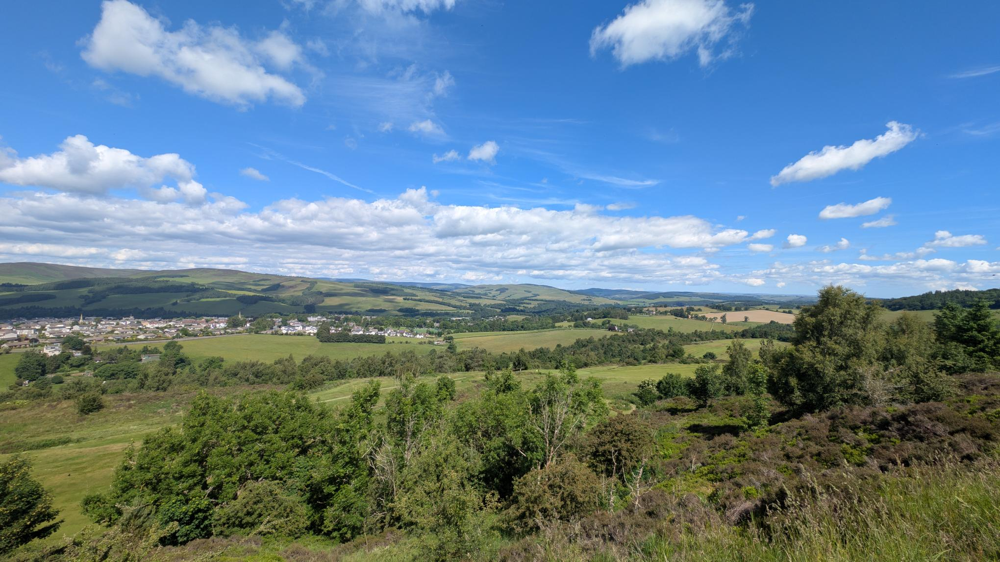

Taken from the diary of Dr John Muir, Selkirk GP 1867 to 1928, the walk starts at Chesterknowes and climbs to Friarshawmuir before traversing Selkirk Common, passing Gala Rig racecourse, Scotland’s oldest, with magnificent views of the town from Selkirk Hill.